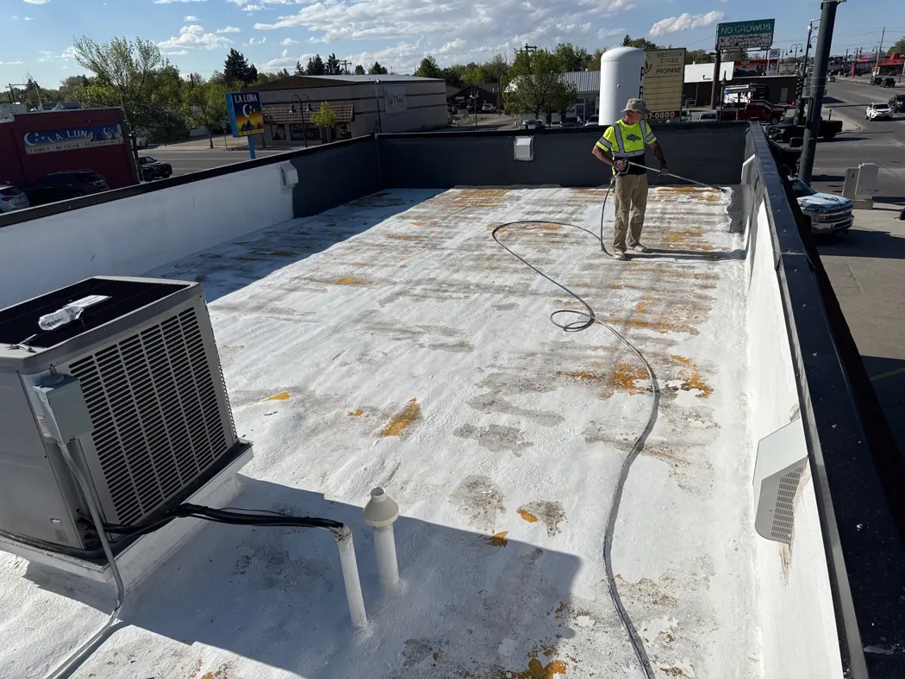

Commercial roofing services
Spray-applied roof coatings.
War Horse Roofing uses a spray rig to apply a white coating over an existing commercial roof. The first question is whether the roof is a good candidate.
Discuss your roof with WadeOne roof, from prep to finish



Planning the work
Questions about your roof
Can my existing roof be coated?
Tell Wade what the roof is made of, whether it has been coated before, and where you’ve noticed water or wear. If you don’t know the roof material, start with the building’s location and what you’ve seen inside.
Which coating system will be used?
War Horse Roofing is an independent Conklin distributor. Ask Wade which system fits your roof, what preparation it calls for, and what warranty terms apply to your building.
What if my building stays open?
Let Wade know your operating hours, delivery schedule, and how the crew can access the roof. Discuss the timing of surface preparation, spray application, and curing when you review the estimate.